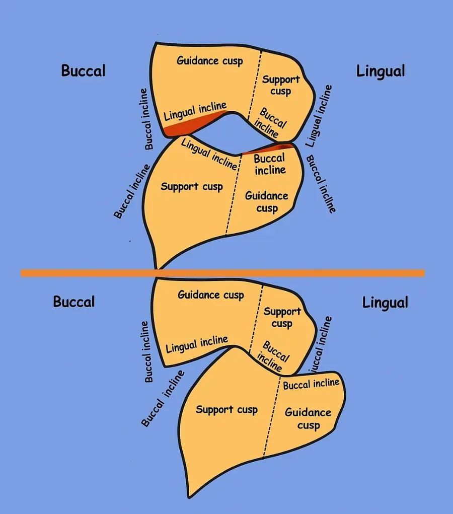

نسخه استخراجشده؛ ترجمه یا تأیید علمی انجام نشده است. وضعیت: captured
در تنظیم اکلوزال یک رستوریشن یا دنچر، تماس زودرس پیدا کردهای. هدف این است که تماسهای زودرس (Premature Contacts) حذف شوند، بدون اینکه ارتفاع کاسپهای فانکشنال از بین برود. از کدام کاسپها باید تراش داد؟

این قانون کمک میکند هنگام تنظیم رستوریشن یا دنچر، تماسهای ناخواسته از بین بروند ولی ارتفاع و نقش کاسپهای فانکشنال (پالاتال در بالا و باکال در پایین) حفظ شود.
BULL یکی از اصول کلاسیک اکلوزال تراپی است: تماسهای فیزیولوژیک و پایدار بین فکها برقرار میماند، بدون تغییر در هندسهی فانکشنال اکلوژن.
روکش را سمان کردهای، با کاغذ کاربن (Articulating Paper) بلندیها را گرفتهای و ظاهراً همه چیز اوکی است. آیا کار تمام است؟ نه، تا وقتی فرمیتوس را چک نکردهای؛ مخصوصاً در دندانهای قدامی که اهمیت بالاتری دارد.
کاغذ آرتیکولاسیون فقط نقاط تماس را نشان میدهد، اما نشان نمیدهد که آیا این تماسها باعث تکان خوردن دندان پایه (Abutment) میشوند یا نه. اگر روکش جدید فرمیتوس داشته باشد، یعنی دارد فشار مخرب به دندان وارد میکند و نتیجهاش میشود: